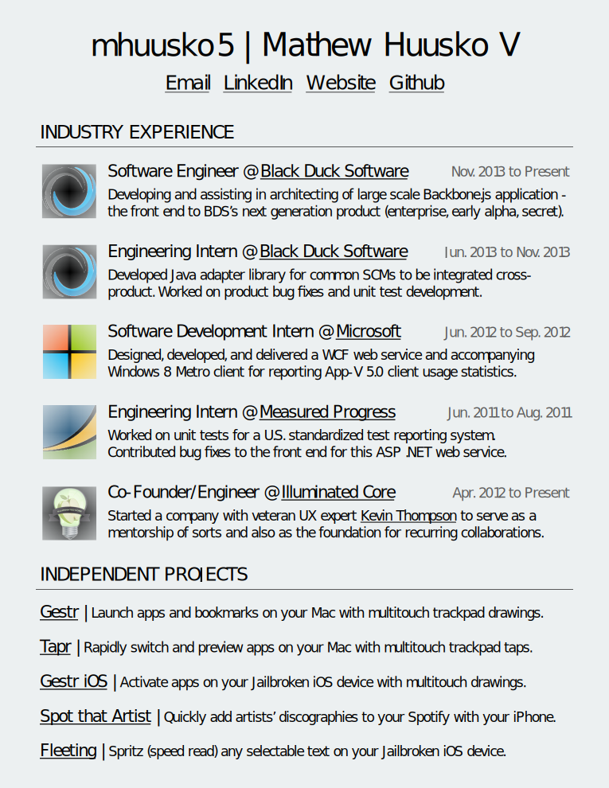
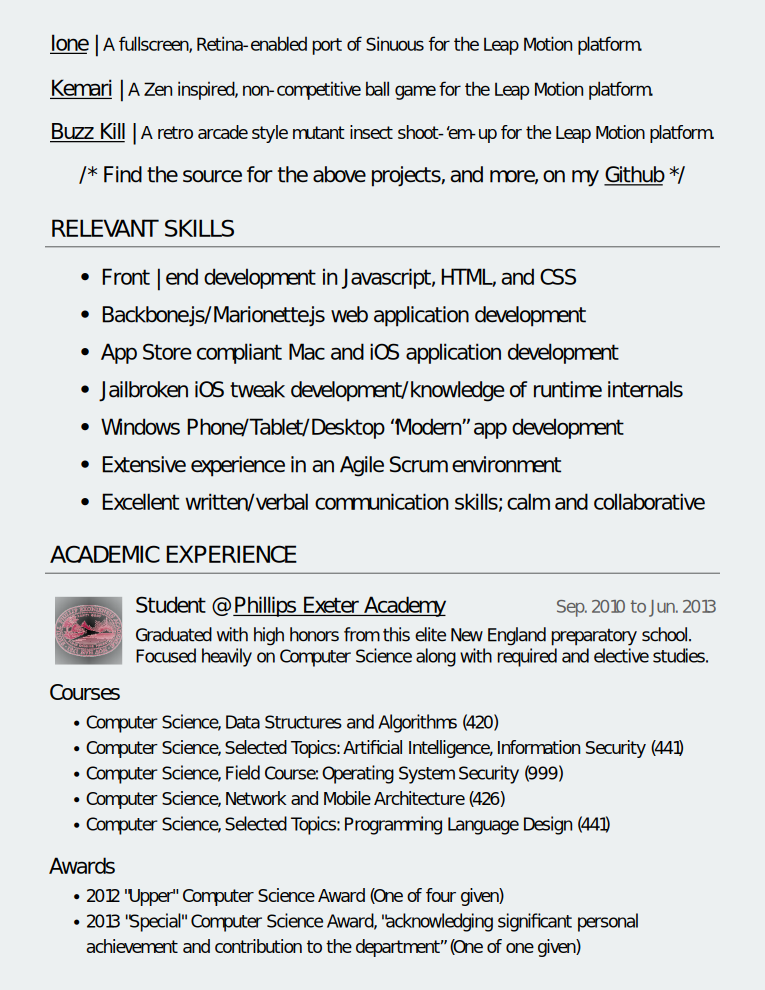
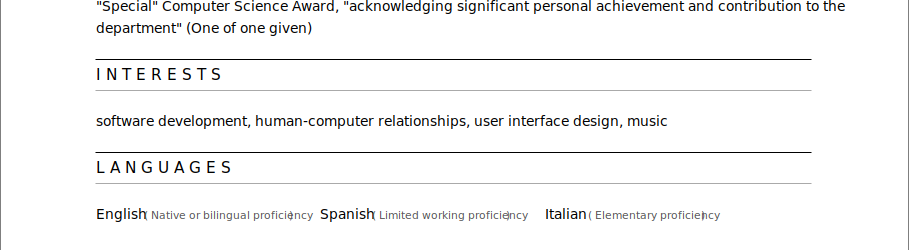
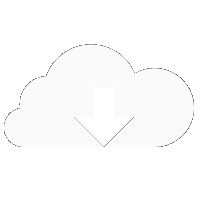

mhuusko5 |
Mathew Huusko V
Software. Software. Software.
I work full time engineering software at Black Duck Software. I wear a small
hat at a big house at the intersection of open-source and enterprise. I take pride in being part of an
effort to spread the appropriate use of open-source (something I couldn't live without) to individuals
and large companies to help creative people collaborate.
I'm the engineering half of Illuminated Core Inc. As does my partner, Kevin
Thompson, I wear a few different hats in order to make sure that what we produce is a meaningful
distraction. I like being entertained, I like making software for entertainment, and I like it when that
software entertains people.
I also create software independently, without a special title (or desk
usually). I'm the mad hatter - I make and wear all the hats, from invention and concept creation to
experience and interface design to creation of visual assets to engineering. I'm on a mission to do away
with the traditional button/menu organized, cursor controlled, keyboard shortcut enhanced, desktop
experience, and my target is Mac OS X.
I like talking about my work, and my vision. But not my
self.
Besides, I hear pictures are worth more.

Download PDF


Gestr

is...
a REVOLUTION in desktop multitasking
a step towards the natural desktop experience
Download for Mac OS X 10.7+
Launch applications/bookmarks on your Mac with trackpad gestures you define - a revolution in multitasking
which leaves just natural touch between you and your applications - no folders, no keyboard shortcuts,
and most importantly, no Dock! With your gestures assigned, all it takes is a four finger tap to make your
trackpad your multitasking canvas! Download now to join the LOADING
people who multitask differently. Or click to show a more expansive explanation.
Whether it be your on desk or lap, in your living room, or in front of your
futuristic float-screen,
you’re going to have to live with “desktop” (non-mobile) software for a long time. When you really want
to consume, or create, you should be immersed in the experience - something that’s seldom achieved
squinting at a four inch screen.
But then why is it that the four inch screens are getting
all the
innovation in interaction, with natural voice and gesture controlled interfaces, while the desktop
experience seems doomed to be ruled by cursors, keystrokes, and menus? Mobile software is becoming more
human. Desktop software should too.
Gestr is the first in a series of experiments embracing
that sentiment. It
takes one of the things we do most while using our computers - launching/switching between applications,
and makes it touch gesture based. For the millions of Mac laptop or Magic Trackpad users, it is now
possible to assign gestures as the entry point to all your applications - no more mousing over to Dock
icons, or enacting special key commands – just drawing what feels natural.
Don't like reading? Watch a tutorial (or skip to 1:50 for a demo).
Gestr
is...
the COOLEST way to multitask on your iDevice
exactly like the original Gestr for Mac OS X
On Cydia for Jailbroken iOS 6+
Launch applications on your iDevice with multitouch gestures you define. Sound familiar? That's because you've seen this natural touch based multitasking experience before, on your Mac, with the original Gestr. Gestr for iOS is a direct port of my Mac OS X version.
Now you can multitask with custom multitouch gestures on your Macbook Pro, Macbook Air, Mac Pro or Mini with attached Magic Trackpad... iPhone, iPod Touch, and iPad!
Watch the demo video to your right to see Gestr in action on this new series of devices!
Ione
is...
simply IMPOSSIBLE to put down
a motion-controller obstacle avoidance game
Available on the Airspace Store
Ione (read "ion" or "Lone") was a weekend distraction - porting the already very fun game Sinuous
to the Leap Motion platform. Surprisingly it's made its way to the "Featured Games" section on the Leap
Motion Airspace Store. It turns out navigating a blue dot away from red dots with your finger is really
addictive. Who knew?
You should just go play it. But you can watch a demo if
you want.
TAPr
is...
kind of, like, Gestr's little brother
ANOTHER natural desktop interface utility
Download for Mac OS X 10.7+
Get to any of the six applications you switch to most on your Mac, with just two taps. A three finger tap on
your trackpad to activate Tapr and you’re halfway there. Download now to join the LOADING
people who multitask that bit faster. Or click to show a more expansive explanation.
When I was creating Gestr I hoped that by the end, I would never have to go into my
applications
folder, or the Dock again. That and more came true. Now in about all of my day’s computer activities, I
never touch an application icon, a web bookmark, or type a url - I have a simple trackpad gesture
assigned to everything.
But what if even simple gestures are overkill? What if you
only use, on
average, a handful of applications? What would be the simplest way, in the natural desktop mindset of
being either touch or voice based, to get to those applications? I think it’s a tap.
While running, Tapr keeps track locally of your
application usage and
figures out which six you go to the most. At any time, you can do a three finger tap on your trackpad to
activate Tapr, which in hand shows those six applications on screen in a grid. That grid corresponds to
your trackpad, so tap on your trackpad where that application is on screen and you will instantly switch
to it. It’s as fast and simple as application switching can get.
Watch the demo below - it's as quick as Tapr.
Kemari
is...
CALMLY played with mouse or Leap Motion
based on an ancient Japanese ball game
Available on the Google Chrome Web Store
Kemari was a ball game that gained popularity in the 13th century Asuka period in Japan. My Kemari
wasn’t hundreds of years in the making (only a couple weeks), but it still holds similarities. It’s
non-competitive - there is no winning or losing, or high scores. Playing Kemari is about relaxing
and focusing for 60 seconds to maintain the balance of as many balls in the air as you can. You can play
with your mouse, or if you’re progressive enough to have one, your Leap Motion controller.
Take a look below to watch me do my best at Kemari.
Under Construction